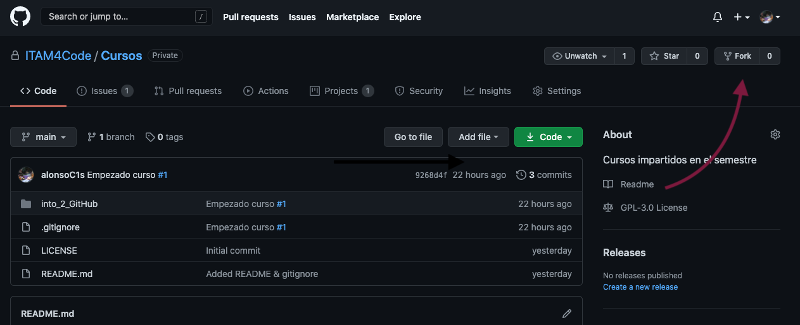
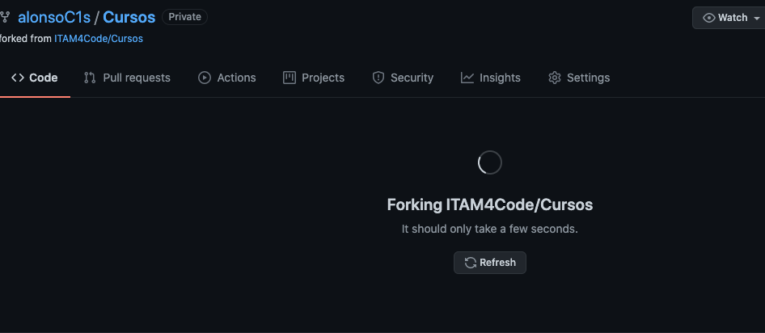

¿Qué es un fork?
Un fork es una copia exacta de un repo, con algunas particularidades. Al hacer un fork de un repo en GitHub estás copiando el contenido entero del repo junto con todo el historial de cambios que se han hecho. Además, el fork nuevo está configurado por default para que puedas incorporar los cambios más recientes que se le hayan hecho al repo original si deseas mantener tu trabajo al día, pero también para guardar tus modificaciones personales y subirlas a GitHub sin permiso del dueño del repo original. ¡Es tu propio repo!
Usualmente hacemos forks por varias razones. Una de ellas, es contribuir a un proyecto Open Source que le pertenece a alguien más. Para poder modificar el código el dueño de ese repo debería dar permiso explícito a todas y cada una de las personas que quieran aportar, lo cual no es práctico. Entonces, para sugerir cambios podemos hacer un fork del original, modificarlo, y proponer que se incorporen los cambios al original mediante un pull request. Hablaremos con mucho más detalle de pull request más tarde. Otra razón igual de válida para crear un fork es crear una versión propia y personalizada del proyecto original. Si los cambios pueden ser útiles para otras personas puedes proponer que se incorporen al original. Y si no lo son y las personas dueñas de ese repo deciden que no quieren incorporarlo, ¡puedes tener tu propia versión! Es una de las bondades del open source1
Esto pasa con relativa frecuencia. Por ejemplo Vim y Neovim.
¿Cómo hago un fork?
El primer paso para hacer un fork es identificar qué repo quieres "forkear". Por ejemplo, puedes intentar con el código fuente de estas mismas notas! En la página encontrarás algo similar a la imagen de abajo.

Para hacer un fork, da click a el botón que dice "fork" (el que tiene una flecha roja en la imagen anterior). Cuando lo hagas verás una pantalla similar a la imagen siguiente.

Espera unos segundos más y verás una página idéntica a la principal del repo que acabas de clonar. Pero no es la misma! Esta es la página de tu propio fork, lo podrás notar porque abajo del título ahora hay una leyenda que dice "forked from ...".